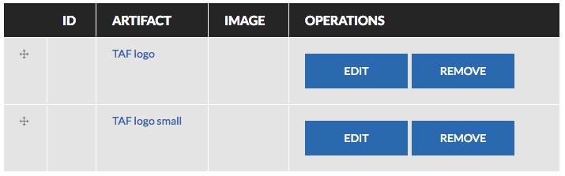

Using PECE
Creating accounts and managing profiles
How do I create an account?
Navigate to your research group’s instance of PECE. Click ‘Login’ in the top left corner. Select the tab ‘Create a new account.’ Fill in the relevant fields. Read and accept the terms and conditions. Click the button ‘Create New Account’.
Why does the system ask for my Zotero username?
Zotero libraries (both individual libraries and group libraries) can be fed into the platform according to these instructions. If you fill in your username when creating an account, every time Zotero entries are imported into the platform, PECE will associate the entries that you added to the Zotero library with your PECE username. In this way, PECE can give you attribution for adding the entries into the library.
I created an account and have not yet been approved. Who do I contact?
You should contact the administrator for your site. Administrators for The Asthma Files, Disaster-STS-Network, and World PECE are listed here.
How do I change my password?
Once logged in, navigate to ‘My Account’ in the top left hand corner. Click the ‘Edit’ tab. Edit the relevant fields under the ‘Account’ tab. Click ‘Save’.
How do I edit my profile?
Once logged in, navigate to ‘My Account’ in the top left hand corner. Click the ‘Edit’ tab. Edit the relevant fields under the ‘Profile’ tab. Click ‘Save’.
Where can I find a list of all users on the site?
Navigate to the ‘About’ link in the top menu, and then click on the tab ‘People’.
How can I see everything that a certain user has contributed to the site?
Currently there is no easy way to do this. For now, you can use the search bar to search for the user’s username.
What can I find on my dashboard?
On your dashboard, you will find tabs that list content that you’ve contributed to the site, and artifacts that you have annotated. You will also find links to add new content to the site.
Logics
What is a substantive logic?
Substantive logics document the rationale for running a particular instance of PECE or for conducting a particular research project. They can be associated with Projects or Groups.
How is it different than a design logic?
“...design logics are critical directives, informed by a design community’s habits and assumptions about language, and by its philosophical commitments, which direct the architecture and arrangement of content in the systems they produce. As design logics shape the way digital systems are designed, the resulting material infrastructure comes to embody the designer’s worldviews.” (Poirier 2017)
The designers of PECE outlined a series of design directives when architecting the platform. These design directives orient how content is organized in the system and how users can interact with the system’s affordances. Since these logics shape how research in the system is conducted and organized, these design logics are an important piece of metadata for the platform as a whole and for any research that is conducted on the platform. They provide insight into the traditions of research and thinking that have informed the design of workflows and data management on PECE.
PECE’s design logics travel with every instance of the platform and cannot be edited by platform contributors.
Where can I find a list of design logics on the site?
Navigate to the ‘About’ link in the main menu. There will be a tab on this page for ‘Design Logics’, where all of the platform’s design logics will be listed.

Where can I find a list of substantive logics on the site?
Navigate to the ‘About’ link in the main menu. There will be a tab on this page for ‘Substantive Logics’, where all of the platform’s substantive logics will be listed. You can also access substantive logics that have been associated with specific projects or groups from their respective pages.
How do I add substantive logics to projects?
When creating a project, there will be a field that allows users to reference substantive logics that have already been added to the platform. Begin typing the title of the substantive logic into this field and the system should begin searching for the link to the logic. Upon saving the project, the substantive logic should be linked from the project page.
How do I add substantive logics to groups?
When creating a group, there will be a field that allows users to reference substantive logics that have already been added to the platform. Begin typing the title of the substantive logic into this field and the system should begin searching for the link to the logic. Upon saving the group, the substantive logic should be linked from the group page.

Projects and Fieldsites
What is a project?
A project designates a research project that the platform is being used to scaffold. You can use this content type to describe when a project starts and ends, its institutional affiliation, and its funding source.
How do I add a project?
Navigate to your ‘Dashboard’. This link will be listed in the main menu. Under the ‘Add Content’ heading, select ‘Project’. You will be directed to a web form to create the content. Enter the relevant fields. See the Substantive Logics section and How do I add substantive logics to projects for a description of this field. Save the content.
Where can I upload a project’s consent form and interview request form?
When creating a project, you will have the option to upload the consent form for the project, along with the interview request form.
How can I see a list of projects on the site?
Navigate to the ‘About’ link in the main menu. There will be a tab on this page for ‘Projects’, where all of the platform’s projects will be listed. You can also access projects that have been associated with specific groups from their respective pages.
How do I designate a group as part of a project?
When creating a group, there will be a field that allows users to reference projects that have already been added to the platform. Begin typing the title of the project into this field and the system should begin searching for the link to the project. Upon saving the group, the project should be linked from the group page.
What is a fieldsite?
A fieldsite is a reference to a certain geographic location where research will be conducted. You can link artifacts to fieldsites to document where the artifact was found.
How do I add a fieldsite?
Navigate to your ‘Dashboard’. This link will be listed in the main menu. Under the ‘Add Content’ heading, select ‘Fieldsite’. You will be directed to a web form to create the content. Enter the relevant fields. Save the content.
Groups
What is a group?
Groups are workspaces where several individuals can contribute content, share a field diary, write collaboratively, and publish essays.
How do I create a group?
Navigate to ‘Dashboard’. This link is listed in the main menu. Select to add a group. You will be directed to a web form to create your group. Enter the relevant fields (see Field glossary for explanation). Note that in order to create a group as a child of another group, you should select the Parent Group in the Group Audience field. Save the group. You are now the group administrator. See How do I add a person to a group or manage group memberships?
How do I join a group?
Navigate to ‘Collaborate’. This tab is listed on the main menu bar. Here, you will find all of the open groups. Navigate by clicking through the arrows on the bottom of the pages, or by searching if you know the name of the group. If there are any groups that you would like to join, click on the link to navigate to the group page. Click ‘Subscribe to group’ on the right hand of the screen. The group administrator will have to approve your request before you are considered a member of a group, and this may take some time. Once you are listed as a member, you should be able to begin associating content with a group.
I’ve requested membership to a group, but I cannot add to it, and it is not listed in my Dashboard. What is going on?
Currently when you request membership to a group, the button on the group page changes to read “Unsubscribe from Group” even though you have not yet been approved by the group admin as a group member. This is a known bug, and we hope to have it fixed soon. If you requested membership to a group and cannot add to it, you likely have not yet been approved. You should contact to the group administrator, which will soon be listed on the group page.
How do I add a person to a group or manage group memberships?
If you created a group or have been appointed as an administrator of a group, you should be able to navigate to the group’s page from your dashboard or from the “Collaborate” link. As long as you are an owner or administrator for the group, you should see an edit menu on the page. Click on the Group tab, and select the link ‘People.’ Here you can manage roles for group members, or delete group members.
What do the different group membership roles mean?
Administrators can manage groups as described above. There is no difference between a researcher and a contributor in a group.
I’m trying to approve a user’s request to join a group, and I keep getting an error. What’s going on?
This is a bug that has happened to a few group managers over the past couple of months. We don’t quite know what is going on. However, if this keeps happening, delete the user’s request to join the group and then add the user manually by navigating to the group page, clicking on the group tab, and then clicking the “Add People” link.
How do I add content I’ve created to a group?
Navigate to ‘Dashboard’. This link is listed in the main menu. Select the content you’d like to add. You will be directed to a web form to create the content. Enter the relevant fields. If the content is being added to a group, be sure to use the ‘Group Audience’ field to mark this. Save the content.
How do I add content others have created to a group?
Navigate to the content you’d like to add to a group. Click on the “Edit Group Audience” tab. Select the group to which you would like to add the content. Save the content.
How do I add content to multiple groups?
Follow the same protocol for adding content, but when selecting “group audience” select multiple groups by holding the “ctrl” key and clicking as many groups as you would like to associate the content to. Users may associate (or unassociate) content with groups at any time. Note that when adding content to multiple groups, the group content visibility field will be applied to all of the groups that the content is associated with. There is no way to override this.
How do I make a group a sub-group of another group?
Navigate to ‘Dashboard’. This link is listed in the main menu. Select the ‘group” link under “Add Content.” Follow the steps to create a group. Under the “Group Audience” field, select the group that you would like to be the parent of this sub-group. Save the group.
I’ve made a new group a sub-group of an existing group? Why is the content in the sub-group not appearing in the parent group?
Sub-groups are simply pointers to parent groups. Parent groups do not adopt the content of their sub-groups. This feature simply lets users know that there is a hierarchical relationship between the groups.
Overview
For an overview of how to add and manage groups on PECE, please see the following YouTube video: https://www.youtube.com/edit?o=U&video_id=aZusE6G1aFY
Archival space
What type of content can I add?
What is the difference between a text artifact and a field note?
A text artifact and a fieldnote are technically very similar. However, unlike a text artifact, a fieldnote will not have a title; the date the fieldnote was created will become the title. Also a fieldnote will appear in the field diary on user’s dashboard. If associated with a group, a fieldnote will also appear under the Field Diary tab of the group’s page, ordered by the date created.
What is an artifact bundle, and why would I use it?
An artifact bundle is an artifact that links to several other existing artifacts. You can create an artifact bundle so that you may annotate a group of artifacts together.
How do I add content?
Navigate to ‘Dashboard’. This link is listed in the main menu. Select the content you’d like to add. You will be directed to a web form to create the content. Enter the relevant fields. If the content is being added to a group, be sure to use the ‘Group Audience’ field to mark this. Save the content.
What do I enter into the Contributor field? Do I enter myself as a Contributor?
The contributor field allows you to designate who is contributing this artifact to the platform. In many other digital systems, the “Contributor” is assumed to be whoever hits the “Save” button. However, we recognize that sometimes, PECE users are contributing materials on the behalf of someone else, and so in this system, the contributor is whoever gets listed in this field. You should list yourself as a contributor.
How do I designate that multiple contributors added a piece of content to the platform?
If there is more than one researcher contributing content, you can use the Contributor field to reference other users in the platform that contributed the content.
What is “critical commentary”?
Artifacts that you upload that may be protected by copyright law can only be posted on the site if they fall under the “Fair Use” provisions of copyright law. Within “Fair Use” provisions, exceptions to laws that prohibit the replication of copyrighted material are made for materials that are the subject of scholarly “critical commentary” or to materials that are being copied for educational purposes. In this field, you should provide commentary on the artifact that documents why it is important and why it is relevant to the platform, along with an analysis of the artifact. Keep in mind most analysis will take place in the annotations. See sections on the Bibliography field, Source field, and Licensing for more information about attribution of artifacts.
Filling in this field is mandatory.
When I upload a file the system asks me which folder I should save the file to in the server. Should I save the content to the private or public folder?
Always, save the content to the private folder, which should be selected as a default. Hopefully we can make this screen go away soon.
How do I select a file that has already been added to the system?
When creating a piece of content, under the Image Upload field, click the ‘Browse’ button to select a file from the existing PECE library. Select the ‘Library’ tab. Choose a file and hit the ‘Submit’ button.
What does “Source” mean?
Use this field to describe where/how you found the artifact. We have purposefully designated this field as a long text, allowing you to elaborate/thickly describe from where the artifact came.
What does “Language” mean?
Use this field to select the language the artifact is in.
What does “Format” mean?
Use this field to enter the file format/extension of the content (.jpg, .pdf, .ogg, .mp4)
How do I add content to a group?
How do I set the group content visibility for an artifact?
See Group Content Permissions.
How do I list the creator (author, photographer, composer) of a piece of content when they are not part of the system?
When creating an artifact, the Creator field can be used to designate the author of a piece of content when that creator is not a user of the system. Technically, this field is a tag. This means that if content in the system has already been tagged with the creator, you should be given the option to select this creator’s name when you begin typing in this field. Otherwise, upon saving the artifact, the creator’s name will become a new “Creator tag” in the system.
How do I add a fieldsite to an artifact?
First the fieldsite needs to have already been added to the platform. See How do I add a fieldsite? for instructions on how to do this.
What does “bibliography” mean?
When creating both website artifacts and PDF artifacts, there will be a ‘bibliography’ field. Using this field you can reference Zotero entries that have been imported into the platform. Begin typing the title of the Zotero entry, and the system should begin searching for the link to that Zotero entry. Upon saving the artifact, the Zotero entry should be linked from the artifact page.
How do I select a license?
In order to select the appropriate license for an artifact, please refer to the Licensing section.
How do I select a permission?
See Content Permissions section.
How should I tag content?
See Tagging Etiquette section.
When I edit content, what should I include in the revision log message?
If a researcher cites a piece of content on the platform on a particular date, and then the content creator revises the content on a later date, it is important to be able to track which version of the PECE content the researcher was citing. PECE enables users to track changes made to content over time. In the revision log message section, users should summarize changes they make the content, so that it is easier to track the changes. See Where can I access older versions of content? for where to track these changes.
Where can I access older versions of content?
When logged in, navigate to the content. Click on the ‘Revisions’ tab. If there is no ‘Revisions’ tab, it means that no changes have been made to the content. Under the ‘Revisions’ tab, you can click on a date - time under the Revisions column to access older versions of the content. You can also compare a newer version of content to an older version by selecting two versions under the Compare column and clicking the ‘Compare’ button.

I’ve identified my content as having multiple contributors, but those contributors don’t have access to edit the content. What’s going on?
Identifying contributors only credits those site users involved in contributing the content. It does not grant those users access to edit the content. Only the content creator can edit the content.
Where can I find my fieldnotes?
Navigate to your ‘Dashboard’. This link will be in the main menu. On your dashboard, there will be a tab labeled ‘Field Diary’. Click on this tab to access your fieldnotes. They will be ordered chronologically.
Why do my published images appear blurry?
Currently, when images are uploaded to PECE, the files are compressed, and the image quality downgrades. If this is a problem for your content, you should reach out to your site administrator and ask to have the quality upgraded.
Can I download files from the platform?
You cannot download files that are listed as All Rights Reserved. Please see the Licensing section for more information about this. Audio files and video files that have been added as a part of Open artifacts can be downloaded from the platform. Navigate to the artifact page where the file is displayed. In the bottom right hand corner of the rendered file, there will be an upside down arrow. Click this button to download the file.

PDF files that have been added as part of Open artifacts can also be downloaded from the platform. Navigate to the artifact page where the file is displayed. When you hover over the PDF viewer, a bar will display at the top. In the upper right hand corner of this bar, there will be an upside down arrow. Click this button to download the file.

Right now, there is not a simple way to download image files. You can right click on the image and Save the file to your computer however.
Can I add a Youtube or Vimeo video to the platform?
Currently, you cannot embed a YouTube for Vimeo video in the platform. It is on our PECE Wishlist to be able to do this in the future. For now you can add a link to the video as a Website artifact.
Can I add a map to the platform?
Currently the only way to share a map on the platform is by capturing an image of it and uploading it to the site as an image artifact, or alternatively by uploading a link to the map as a Website artifact.
Analysis space
What is the difference between a structured analytic, an analytic, and an annotation?
Analytic: An analytic is a question designed to elicit various viewpoints about the artifact.
Structured Analytic: A structured analytic is named set of organized questions.
Annotation: Annotating an artifact involves responding to a set of shared and evolving questions that are designed to elicit various viewpoints about the artifact. In the vocabulary of literature (the humanities field most akin to our tradition of anthropology), you can think of annotating an artifact as “reading” an artifact. Each reading, performed by different individuals, produces different interpretive insights that broaden and deepen the collaborative analysis of an artifact.
How do I create a structured analytic?
Technically, a structured analytic is a tag that gets applied to an analytic. So let’s say that you have the question: “What is the main argument of the article?” and you want to add it to a structured analytic called “Analyzing a research paper.” In PECE, “Analyzing a research paper” would be a tag that the user associates with the question. By structuring the structured analytic as a tag (rather than a folder or some other encompassing structure), users can associate their questions with more than one structured analytic without having to duplicate the question in multiple structured analytic folders.
Because of this, in order to create a structured analytic, the user should simply create an analytic and add a new tag (by clicking on the green ‘+’ next to the list of question sets). The user will be directed to a new form where they can name the structured analytic and add a description. Once the analytic is saved the structured analytic will be added to the list of structured analytics with which analytics can be associated.


How do I create an analytic?
Navigate to ‘Dashboard’. This link is listed in the main menu. Under the ‘Add Content’ heading, select ‘Analytic’. You will be directed to a web form to create the content. Enter the relevant fields. Select the structured analytic that the analytic will be added to. If you would like to add the analytic to a new structured analytic, follow the instructions for creating a new structured analytic. Save the content.
How do I annotate an artifact?
Navigate to the artifact you would like to annotate. Click the ‘Annotate’ button below the artifact. Select a ‘Structured Analytic’ (set of questions) that you will use to annotate the artifact, and click ‘Continue’. Select a question to respond to, and click ‘Continue’. To add a question, Select <Create new>, enter the question title in the field that appears, and click ‘Continue’. Enter the relevant fields, and click ‘Save and Continue’. Repeat steps 4 and 5 until finished annotating and then click ‘Finish’.
Do I have to answer all of the questions for a certain structured analytic when annotating an artifact?
No, you can skip a question.
How do I select a permission?
See Content Permissions section.
When creating an annotation, if I hit Save and Continue, and then decide I do not want to answer another question, there is no button for ‘Finish’ from the window that lists structured analytics or the window that lists analytics. Will I lose all of my work if I close out of the window?
No, as soon as you hit Save and Continue, the response to your question is saved. You can now close out of the window or ‘Cancel’ at any point without losing your previously saved work.
How do I edit an annotation?
PECE users should be able to edit their own annotations from any interface where their annotations are displayed by clicking on the ‘Edit Annotation’ button. See How do I access my annotations?.

How do I edit an analytic?
The titles of analytics should not be edited for any reason. Since all questions on the platform are shared, and users likely have used the question to annotate an artifact, changing the text of the question could comprise the context of existing annotations on the platform. To add the analytic to another structured analytic, navigate to the page for analytic, and click the ‘Edit’ tab. Check the box for the structured analytic to which you would like to add the analytic.
How do I see a list of all existing structured analytics?
In the newest update to PECE, navigate to the ‘Analyze’ link. This link will be listed in the main menu. A list of all existing structured analytics will appear here.
How do I see a list of all analytics in a given structured analytic?
In the newest update to PECE, navigate to the ‘Analyze’ link. This link will be listed in the main menu. A list of all existing structured analytics will appear here. Click on the structured analytic to be directed to a list of analytics that have been designated a part of that structured analytic.
How do I access my annotations?
There are a few options for accessing annotations.
-
Navigate to your ‘Dashboard’ and click on the tab for ‘Annotated Artifacts’.
-
Navigate to an artifact that you’ve annotated. Under the rendered file and the ‘Annotate’ button, you will see a list of users that have annotated the artifact. Click on your username to see your annotations of the artifact.
-
Navigate to the ‘Analyze’ link in the main menu. Click on a structured analytic you’ve used to annotate an artifact and a question that you’ve used to annotate an artifact. You can then filter this page to your username to see the annotations that you’ve created from this question.
How do I see how others annotated an artifact?
Navigate to the artifact. Under the rendered file and the ‘Annotate’ button, you will see a list of users that have annotated the artifact. Click on a username to view their annotations. From the page that lists the user’s annotation of an artifact, you can also click on a question to see how multiple users responded to that question for the artifact.
How do I see all of the responses to a particular analytic?
In the newest update to PECE, navigate to the ‘Analyze’ link. This link will be listed in the main menu. A list of all existing structured analytics will appear here. Click on the structured analytic to be directed to a list of analytics that have been designated a part of that structured analytic. Click on the analytic to view all responses to the analytic. From here you can filter the responses to a particular user’s responses or to responses to a particular artifact.
How do I see all of the responses to a particular analytic for a given artifact?
See How do I see all of the responses to a particular analytic?
How do I see all of the responses to a particular analytic created by a given user?
See How do I see all of the responses to a particular analytic?
I annotated a Private or Restricted artifact, and my annotation is appearing in both Search and on Tag pages. Shouldn’t my annotation be Private or Restricted if it is responding to a Private or Restricted artifact?
Yes, it should. Unfortunately, right now, all annotations default to Open. This is a known bug, and we are hoping to have it fixed soon.
Annotation Etiquette
There are several important things to remember when creating analytics for the platform. All analytics are shared by everyone across the platform. As soon as you create an analytic, it is available to everyone in the platform to use for annotating any artifact. PECE has been designed to take advantage of this. As diverse users respond to the same set of questions, it becomes possible to juxtapose answers to questions.
Therefore,
-
You should avoid creating questions that respond to only one artifact or are relevant to only a very specific fieldsite within a broad structured analytic. For instance, you should avoid adding a question like, “How has the Obama administration’s Open Government Directive influenced the New York City open data policy?” under a structured analytic called “Profiling a Policy.” Instead, a question like, “How have existing policies and directives influenced the structure and content of this policy?” would be accessible to many users on the platform to annotate many artifacts about diverse policies.
-
More specific questions should all be categorized into Structured Analytic. A question like “How has the Obama administration’s Open Government Directive influenced the New York City open data policy?” would be appropriate in a structured analytic called “Profiling the New York City open data policy,” which could be useful if a set of researchers were all going to be annotating artifacts related to the New York City open data policy.
It can be valuable to use the structured analytic headings to cordon off more specific questions so that certain groups can respond to the same set of questions. For instance, in The Asthma Files, we have one Structured Analytic called “Special Issue for Transport Policy.” A group of researchers created this analytic so that they can share a set of questions for annotating each other’s abstracts for a special issue to which they were all contributing articles. While these questions were not relevant to any other users on the platform, categorizing the questions under the “Special Issue for Transport Policy” structured analytic, separated these questions out from other more general questions.
-
Be sure to navigate the existing structured analytics by clicking on ‘Analyze’ in the main menu before creating a new analytic or structured analytic. If you see questions or sets of questions similar to the ones you were planning to create, gauge whether there is analytic value to create a separate analytic. If you do create a separate analytic, it will not be possible to juxtapose the responses to this question to the responses the similar questions you identified. This is a tradeoff that you will need to consider.
-
If a question is relevant to more than one structured analytic, categorize it under both structured analytics following these instructions. Do not duplicate the analytic to categorize it under a separate structured analytic.
Overview
For an overview of how to annotate artifacts, please see the following YouTube video: https://www.youtube.com/edit?o=U&video_id=bB2X8lZWyVY
Publication space
What is the difference between a memo, a photo essay, and a PECE essay?
A memo is a first draft of a piece of writing that may be published on the site. Upon publishing a memo, that memo is opened for comments from the platform’s community.
A photo essay is a collection of image artifacts, ordered into a slideshow, with text added for context. For an example of a photo essay, see here
A PECE essay is a collection of artifacts, memos, and essays, organized into a collage, with text added for context. For an example of a PECE essay, see here
How do I create a memo?
Navigate to your ‘Dashboard’. This link will be listed in the main menu. Under the ‘Add Content’ heading, select ‘Memo’. You will be directed to a web form to create the content. Enter the relevant fields (explained in other parts of this document). Save the content.
How do I create a photo essay?
Navigate to your ‘Dashboard’. This link will be listed in the main menu. Under the ‘Add Content’ heading, select ‘Photo Essay’. You will be directed to a web form to create the content.
In the ‘image artifact’ field, begin typing the name of the artifact you
would like to link into the photo essay. In the ‘text’ field, enter the
essay text that you wish to display with the image artifact. Click the
‘Create Item’ button. 
To add another photo essay slide, click the ‘Add New Item’ button. Once done, fill out the remaining fields (explained in other parts of this document), and save the content.
For an overview of how to create photo essays, see this YouTube video.
How do I reorder photos in a photo essay?
Once you’ve created photo essay items, you can reorder photos by clicking and holding on the ‘+’ symbol next to the item and dragging the item to a new order.

How do I create a PECE essay?
Navigate to your ‘Dashboard’. This link will be listed in the main menu. Under the ‘Add Content’ heading, select ‘PECE Essay’. You will be directed to a web form to create the content. Enter the relevant fields. Save the content. This first step will only capture the metadata for the essay.
To design the essay, navigate to the essay page you just created and click ‘View Essay’. At the bottom of the screen there will be a black bar that says ‘Customize this page’. Click this button to begin to the customize the page.
To add content to the page, click the ‘+’ button in the blue ‘Content’ box. From this screen, you can add image files (not artifacts; just the images), maps, free text, content (artifact, annotations, memos, and essays) stored elsewhere on the platform, and headers for specific portions of the essay. To add content stored elsewhere on the platform, click the ‘Add Content’ button, begin typing the title of the content, and select the appropriate content from the drop-down list. Select a view mode from the drop-down menu below. A preview of how the content will be rendered will appear on the right of the screen. Click Save.
To reorder content on the page, after you’ve clicked the ‘Customize this page’ button, you can click and hold on content boxes and drag them to new locations.
Once you’re done creating your essay, click the ‘Save’ button in the black box at the bottom of the page.
For an overview of how to create PECE essays, see this YouTube video.
How do I comment on publications?
Navigate to the memo, photo essay, or PECE Essay that you would like to comment on. As long as you are logged in, you will see a heading to ‘Add New Comment’ on the bottom of the page. Enter a subject, a comment, and click ‘Save’.

Licensing
Please review this link for an explanation of how to apply Creative Commons licenses to content on the platform.
Zotero
How do I add a zotero feed to the platform?
Please note; you should only need to create a Zotero feed once per Zotero library. Once the feed has been created in PECE, any entries added to the Zotero library afterwards will automatically be imported into PECE within a half hour.
-
Navigate to “Dashboard.”
-
Under “Add Content,” select “Zotero Feed.”
-
Title your feed.
-
If importing a group library, To find your group id, navigate to your groups’ settings page and the numeric part of the URL is your group id. If importing a user library, navigate to settings/keys in Zotero. Your ID will follow the sentence “Your userID for use in API calls is”
-
If you’d only like to import a single collection, select “Fetch Collections.” If you enter a collection id, only items from that collection will be fetched from Zotero. Collections are the “folders” in your Zotero library. To find the id of a collection, go to your library, click on a collection to see its content, and look at the page URL. The collection id is the last item in the path, after “collectionKey/”.
-
To get an API key, navigate to settings/keys in Zotero.
-
Select “Create new private key.”
-
Enter a key description (e.g. The Asthma Files).
-
Under “Personal Library,” select “Allow library access,” “Allow notes access,” “Allow write access.”
-
If importing a user library, under “Default Group Permissions,” select the level of access PECE should have to group entries (we recommend selecting “None” here). If importing a group library, select “None” here (you will select the individual group permissions in the next step.)
-
If importing a Group, check “Per Group Permissions” and then select “Read/Write” access for the group that you will be importing.
-
Save Key.
-
-
Copy and paste the key generated in Zotero into the field “Zotero API key” in PECE.
-
Publish.
-
Large libraries will likely take several minutes to import. Do not worry if the progress bar doesn’t look like it’s moving.
-
Now any entries added to this Zotero library will automatically be added to the platform within a half hour.
-
All website entries within the Zotero library will automatically be added to PECE as website artifacts with the citation already linked to the artifact.
For an overview of adding a Zotero feed in the platform, see this YouTube video.
What happens to my Zotero collections when I import a feed into PECE?
When you import a Zotero feed into PECE, each Zotero entry that was previously in a collection (or enclosing folder) in Zotero will be tagged with that folder in PECE. These tags will be separate from free tags. So if a Zotero entry is imported into PECE that had been in a folder called New York City, it will have a collection tag in the platform called ‘New York City’; however, clicking on this tag in the platform will not link to a page that will list artifacts tagged with New York City because the collection tags are separate from the free tags.

How do I access a platform bibliography?
Navigate to the “Discover” page. This link is in the main menu. In the right hand sidebar, there should be a link entitled “PECE Bibliography.” Click on this link to access the platform’ bibliography.
How do I cite pdf and website artifacts using zotero entries?
See What does ‘bibliography’ mean?
Tagging Etiquette
Tagging is key to PECE because it facilitates showcasing the multiplicity of perspectives surrounding any piece of content. Any piece of content on the platform can be tagged by any user on the platform with any term. When users navigate to the page for a tag, they will see, in a random order, everything on the site that has been tagged with that term. This further showcases the multiplicity of perspectives surrounding the meaning of a term and facilitates “chance encounters” amongst data that may not have otherwise been juxtaposed. Because of this, we have ignored many of the “do’s/don’t’s” that come out of the literature on collaborative tagging systems. In order to make this work, however, (and not spiral into total chaos), we recommend that you adhere to the following rules of etiquette when tagging.
-
If your tag or something similar shows up in the Autocomplete function as you begin typing it, consider whether the existing tag will work to describe your content.
-
A goal of PECE is to show connections between disparate content through tags, and tagging several pieces of content with the same tag facilitates this. However, we also recognize that it may be analytically significant to tag a piece of content with ‘knowledges’ vs. ‘knowledge’ or ‘Truth’ vs. ‘truth’.
-
Tag each term separately rather than adding conjunction punctuation to show hierarchy.
- There is no benefit on this platform to linking words together in a hierarchy. For instance, there is no benefit on this platform to tagging an artifact with ‘Colors – Blue’ rather than tagging the artifact with both ‘Colors’ and ‘Blue’. In fact tagging in the former is likely to inhibit others from stumbling across your content.
-
Tag any content with any terms that you deem appropriate (even if those terms conflict with the current tags for the content).
-
Tagging is a key functionality behind facilitating “chance encounters” amongst disparate data on this platform. Importantly, tagging fills the tag pages with content.
-
Tagging also allows the platform to capture the multiplicity of terms used to characterize a piece of content, which is a key design logic.
-
Search
Is there a way to search across instances of the platform?
We are hoping that this will be possible very soon. We are looking at one module https://www.drupal.org/project/apachesolr_multisitesearch to enable this.
Discover
A bunch of website and PDF artifacts just appeared in the platform and don’t have a contributor listed. Where did these artifacts come from?
When a Zotero feed is added to the platform, the platform automatically imports new entries from the Zotero library every 30 minutes. Whenever new journal article or website Zotero entries are imported to the platform, a PDF or website artifact is automatically created with the Zotero entry listed in the ‘bibliography’ field. Since the artifact is created automatically by the platform, there will be no contributor listed for these artifacts.